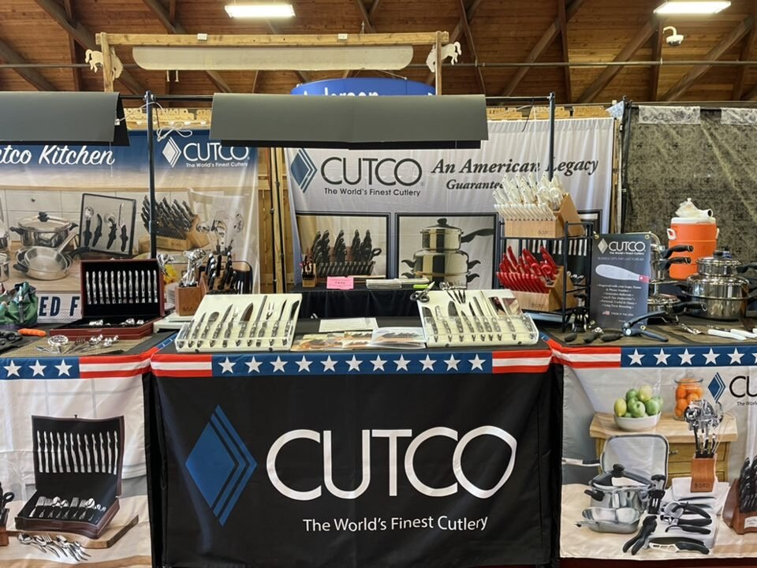

Kiosk

KIOSK MEETING - OCTOBER 8TH 2026. 11AM-3PM
🧠 Kiosk Training Videos
Everything you need to dominate a Cutco Kiosk—step-by-step.
Learn how to set up like a pro, approach customers with confidence, and close walk-ups without pressure. Whether it’s your first shift or your fiftieth, these videos will sharpen your edge.
🧰 Tools + Templates
The systems that make success at the kiosk repeatable.
Download shift trackers, lead sheets, inventory checklists, and booth setup guides. These resources save you time, boost consistency, and keep you focused on what matters—selling.